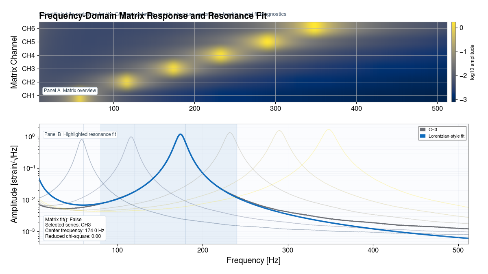

GWexpy ドキュメント
GWexpy は GWpy を拡張し、時系列および周波数系列データ解析のための新たなコンテナや数値計算ユーティリティを提供します。
v0.1.1 · Python ≥ 3.9 · 最終更新: Apr 25, 2026
Documentation Hub
解析目的から、使いたい機能を選ぶ
行列コンテナ、フィールド演算、フィッティング、信号処理を 目的別の入口にまとめたトップページです。まずはクイックスタートか、 下の 9 枚カードから解析タスクに近い入口を選んでください。

FrequencySeriesMatrix の全体像と、抽出した 1 チャンネルに対する共振フィットを同時に表示。 GWexpy の Matrix 系コンテナと解析ワークフローを一画面で示します。
Quick install
git clone https://github.com/tatsuki-washimi/gwexpy.git
cd gwexpy
pip install -e .3-line demo
from gwexpy.timeseries import FrequencySeriesMatrix
fsmtx = FrequencySeriesMatrix.read("data.hdf5")
fsmtx[2, 0].fit(model="lorentzian").plot()Note
ページ種別: ドキュメント入口
対象読者: 初回利用者、GWpy ユーザー、解析ワークフローを探している利用者
検索ヒント: quickstart, installation, tutorials, examples, ScalarField, TimeSeriesMatrix
あなたに合ったガイド
Note
チュートリアル は機能やクラスを 1 つずつ学ぶ、機能別の学習ページです。 ケーススタディ は解析目的に沿って複数機能を組み合わせる、目的別の実践例です。
基礎から学びたい方向け
インストールガイド
機能別チュートリアル
実践的な解析例を知りたい方向け
目的別ケーススタディ
高度な信号処理
GWpy から移行・併用する方向け
差分レシピと互換性の入口
追加 API 一覧へのリンク
やりたいことから探す
TimeSeries の読み込み・描画・フィルタ処理
STFT・Qスキャン・周波数-時間表現の生成
ScalarField / VectorField / TensorField の基礎
各ノイズ源の寄与を分離・可視化
GLS・ベイズフィット・MCMC サンプリング
特徴抽出・正規化・scikit-learn との連携
HDF5 / GBD / Frame / Zarr など多形式対応
GWexpy の差別化ポイント
ObsPy / LAL / Finesse / PyCBC との相互運用
GWexpy の差別化ポイント
TimeSeriesMatrix / FrequencySeriesMatrix の一括処理
可視化例（Visual Examples）
このカード群は、メインの「目的別ケーススタディギャラリー」から一部を抜粋して紹介するものです。

ノイズバジェット

伝達関数推定

アクティブダンピング
GWpy の基礎を学ぶ
GWexpy は GWpy の上に構築されています。GWpy の基本操作は下記の公式ドキュメントを参照してください。
最初に読むページの目安
最短でコードを動かす: クイックスタート (Quickstart)
学習順序を決める: はじめに (Getting Started)
GPS 時刻や FFT の前提を先に確認する: 前提条件と規約
📖 ガイド (Guide)
🎓 学習 (Learn)
🗂 フォーマット & I/O
📚 リファレンス (Reference)